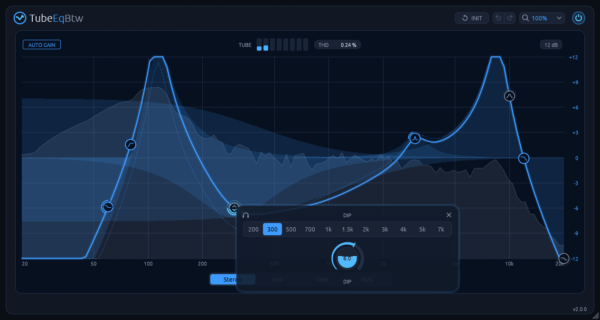
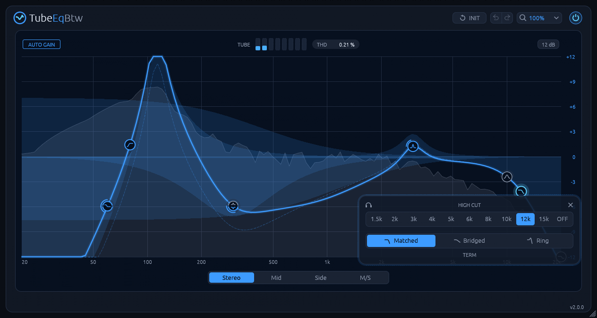
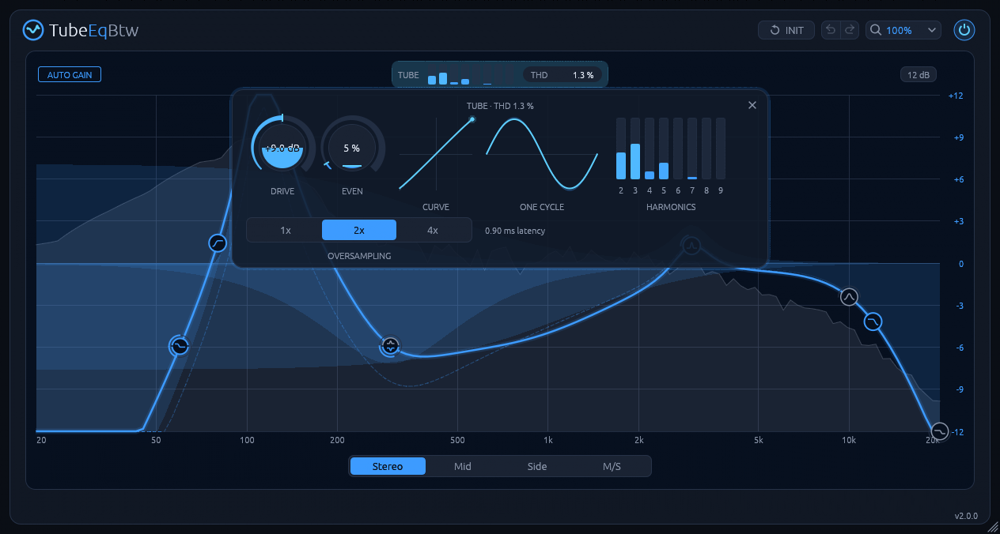
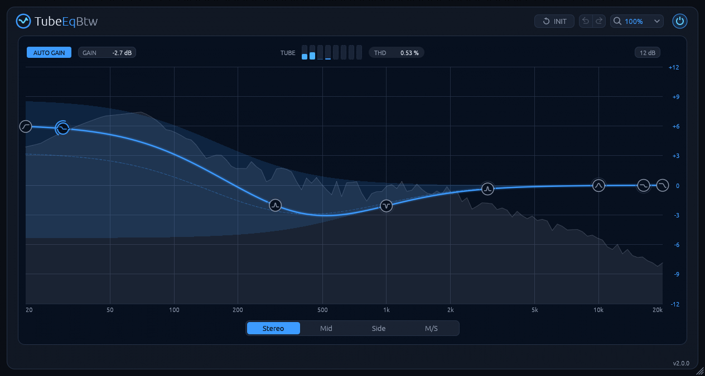

TubeEqBtw manual
A passive program EQ, mid-range EQ and high/low filter with a tube stage: broad, gentle curves for a mix, drums, bass or a voice, the low boost and cut that make the kick trick, and steep cuts that can ring.
Version 2.0.0. To install it, see the install steps.
Contents
Getting started
Put TubeEqBtw on a drum bus, a bass, a voice or the mix and play it. At the defaults every dial is at 0 and both cuts are off, so the curve is flat: you hear only the transformers and the tube pair, a trace of colour. Every band is a ring on the curve. Drag LOW's ring (at 60 Hz) up for weight, then drag it down with the right button for the kick trick; drag HIGH's ring (at 10 kHz) up for air. Right-click any ring for its steps and knobs. Switch AUTO GAIN on (top left of the display) to compare at the same loudness, and the power switch at the top right to hear it against the input.
TubeEqBtw has no presets of its own since 2.0.0: your host's presets hold every setting. The starting points below give the settings 1.0.0's presets had, and a few more.

The window
- The header: INIT, undo and redo, the zoom and the power switch.
- The display's top strip: AUTO GAIN on the left, the TUBE strip in the middle (the harmonics the tube adds and their THD; a click opens the tube's panel), the display's scale on the right.
- The display: the curve heard as the bright line, each band alone dashed under it, the output's spectrum behind, and a ring on the curve for each band. A ring shows its band's shape (a shelf, a bell, a notch, a high- or low-pass), grey while the band does nothing and blue once set.
- The bottom strip: CHANNELS.
- The bottom-right corner: drag it to resize the window.
The controls
There are no knobs outside the display: each band's controls are on its ring and in its panel, which a right-click on the ring opens.
| Control | Where | Range | Default | What it does |
|---|---|---|---|---|
| INIT | header | Every setting back to its default and the display's range to 12 dB, in one go. The window's size and zoom stay; undo takes it back. | ||
| Undo, redo | header | up to 100 steps | Step back and forward through what you changed in the window: a drag, a click or a spin of the wheel is one step each. Automation and the host's own undo aren't steps. Not saved with the project. | |
| Zoom | header | 100 to 200 % | 100 % | Scales the whole window, kept with the project. |
| Power switch | header, right | on, off | on | Off, the input passes untouched, crossfaded over 20 ms. |
| AUTO GAIN | top strip, left | off, on | off | Holds the loudness as the curve changes it; the chip beside it reads the gain in use. |
| DRIVE | tube's panel | 0 to +18 dB | 0 dB | How hard the tube pair is driven; the level stays. |
| EVEN | tube's panel | 0 to 100 % | 5 % | The tube pair's balance: at 0 matched, at 100 % one half alone. |
| OVERSAMPLING | tube's panel | 1x, 2x, 4x | 1x | The tube's rate, with the latency beside it in ms. 1x has no latency, 2x 43 samples, 4x 50. Not automatable. |
| Scale | top strip, right | 3, 6, 12, 30 dB | 12 dB | How far up and down the display shows, kept with the project. |
| LOW FREQ | LOW's ring | 20, 30, 60, 100 Hz | 60 Hz | Where LOW BOOST and LOW ATTEN work. |
| LOW BOOST | LOW's ring | 0 to 10 | 0 | A shelf that lifts the lows from LOW FREQ down. |
| LOW ATTEN | LOW's ring | 0 to 10 | 0 | A shelf that cuts the lows, a little above where LOW BOOST lifts. |
| HIGH FREQ | HIGH's ring | 3, 4, 5, 8, 10, 12, 16 kHz | 10 kHz | Where HIGH BOOST peaks. |
| HIGH BOOST | HIGH's ring | 0 to 10 | 0 | A peak at HIGH FREQ: up to 18.5 dB at its sharpest, 11.2 dB at its broadest. |
| BANDWIDTH | HIGH's ring | 0 (sharp) to 10 (broad) | 5 | HIGH BOOST's width. The peak lowers as it broadens. |
| ATTEN SEL | ATTEN's ring | 5, 10, 20 kHz | 20 kHz | Where HIGH ATTEN's shelf starts. |
| HIGH ATTEN | ATTEN's ring | 0 to 10 | 0 | A shelf that cuts the highs from ATTEN SEL up. |
| LOW PEAK FREQ | LOW PEAK's ring | 200, 300, 500, 700 Hz, 1 kHz | 300 Hz | Where LOW PEAK lifts. |
| LOW PEAK | LOW PEAK's ring | 0 to 10 | 0 | The mid-range EQ's low peak, up to +10.4 dB, wider as it rises. |
| DIP FREQ | DIP's ring | 200, 300, 500, 700 Hz, 1, 1.5, 2, 3, 4, 5, 7 kHz | 1 kHz | Where DIP cuts. |
| DIP | DIP's ring | 0 to 10 | 0 | The mid-range EQ's dip, down to −11.6 dB, narrower as it deepens; half its travel is about −6 dB. |
| HIGH PEAK FREQ | HIGH PEAK's ring | 1.5, 2, 3, 4, 5 kHz | 3 kHz | Where HIGH PEAK lifts. |
| HIGH PEAK | HIGH PEAK's ring | 0 to 10 | 0 | The mid-range EQ's high peak, up to +10.3 dB, narrower than the low one. |
| LOW CUT | LOW CUT's ring | off, 50, 80, 100, 150, 250, 500, 750 Hz, 1, 1.5, 2 kHz | off | The filter's steep low cut. Off parks its ring at the display's left end. |
| LOW CUT TERM | LOW CUT's panel | Matched, Bridged, Ring | Matched | What the low cut sits between: see The high/low filter. |
| HIGH CUT | HIGH CUT's ring | 1.5, 2, 3, 4, 5, 6, 8, 10, 12, 15 kHz, off | off | The filter's steep high cut. Off parks its ring at the display's right end. |
| HIGH CUT TERM | HIGH CUT's panel | Matched, Bridged, Ring | Matched | The same for the high cut, on its own. |
| CHANNELS | bottom strip | Stereo, Mid, Side, M/S | Stereo | What the EQ works on. Mid and Side leave the other part as it came; M/S puts the lows on the mid and the highs on the side. |
| Size | bottom-right corner | from 960 x 560 | 1264 x 676 | Drag the corner, or the host's window edge: only the display grows, every control keeps its size. Kept with the project. |
The rings with the mouse:
| Ring | Left button | Right button | Across |
|---|---|---|---|
| LOW | up and down: LOW BOOST | up and down: LOW ATTEN | LOW FREQ, with either button |
| HIGH | up and down: HIGH BOOST | up or right: BANDWIDTH, broader; the scroll wheel too | HIGH FREQ, with the left |
| ATTEN | down: HIGH ATTEN | ATTEN SEL | |
| LOW PEAK, HIGH PEAK | up: the peak | its frequency | |
| DIP | down: the dip | its frequency | |
| LOW CUT, HIGH CUT | up or right: the next TERM | its frequency; dragged in from the end, it turns on |
Dragged across, a ring snaps to the next step. Double-click a ring to reset it (a cut's turns off). Rings on the same step stand side by side; a peak and the dip on one step share a ring, its upper half the peak and its lower half the dip. Hover a ring for its reading.
Knobs in the panels: drag up or down; hold Shift for fine steps; turn the scroll wheel over it; double-click to
reset to the default; right-click to type a value (10 kHz, 5,5, +6 dB). Every control shows a one-line tooltip.
The host can automate every parameter but OVERSAMPLING.
How to use it
A ring's panel
Right-click a ring and its panel opens beside it: the band's steps in a row, its knobs, and for a cut its TERM, each with its curve drawn beside its name. The headphone at the panel's top left keeps that band listening (see Listening to a band). A click elsewhere or the panel's × closes it.

The lows and the kick trick
LOW FREQ picks where the lows work: 20 and 30 Hz for the lowest octave under a bass, 60 Hz for a kick, 100 Hz for warmth. LOW BOOST lifts a shelf from there down. LOW ATTEN cuts a shelf that starts a little above it, so with both up at once the curve lifts the bottom and dips the low mids above: the kick trick. Both at 5 at 60 Hz lift 20 Hz by 2.3 dB and dip the low mids at 784 Hz. More LOW ATTEN than LOW BOOST makes it a cut with a little weight left under it.
On LOW's ring the left button drags LOW BOOST and the right button LOW ATTEN, up and down, from anywhere on the ring.
A low boost also drives the first transformer harder, so the bass thickens a little while the top stays clean.
The highs: boost and cut
HIGH BOOST is a peak at HIGH FREQ, and BANDWIDTH sets how wide: sharp for a snare's crack at 5 kHz, broad for air over a voice at 12 or 16 kHz. As it broadens the peak lowers, as the circuit's does: 18.5 dB at the sharpest, 11.2 dB at the broadest. HIGH ATTEN cuts a shelf from ATTEN SEL up, on its own to soften a harsh top, or above a boost to ease the very top while the lift stays.

The mid-range EQ
Three bands from the passive unit that sat under the program EQ: LOW PEAK from 200 Hz to 1 kHz, DIP from 200 Hz to 7 kHz, HIGH PEAK from 1.5 to 5 kHz. They are three coils in one network, so they lean on each other: LOW PEAK and DIP both full on 500 Hz are 2.0 dB off their sum. Each one's width moves with its knob: LOW PEAK widens as it rises, DIP narrows as it deepens, and HIGH PEAK is the narrower peak. Half of DIP's travel is about −6 dB.
DIP at 300 Hz takes the boxiness out of a kick, a guitar or a voice recorded close; at 500 Hz to 1 kHz the honk. HIGH PEAK at 3 kHz brings a voice or a guitar forward; at 4 or 5 kHz it adds bite. LOW PEAK at 200 or 300 Hz fills out a thin sound. With all three at 0 the mid-range EQ isn't in the path at all.
The high/low filter and its TERMs
A low cut and a high cut, each a steep third-order filter that only steps: LOW CUT from 50 Hz to 2 kHz, HIGH CUT from 1.5 to 15 kHz. Off, a cut's ring sits hollow at the display's end; drag it in to turn it on.
Each cut has its own TERM, what it sits between, in its panel or by dragging its ring with the right button:
- Matched: a clean 16.5 dB an octave, the corner close to the panel's step.
- Bridged: a softer 11.2 dB an octave, the corner further inside.
- Ring: 13.5 dB an octave with a peak of about +14 dB at the corner: the honk of a telephone or a radio.
LOW CUT at 500 Hz and HIGH CUT at 3 kHz, both in RING, is a telephone. With both cuts on one TERM they are one circuit, and cuts close together lean on each other; on two TERMs each is its own. A step runs the new cut through the last 85 ms of the sound and crossfades to it over 20 ms, so stepping a cut, even under automation, doesn't click.

The tube: DRIVE, EVEN and OVERSAMPLING
The TUBE strip at the top of the display shows the harmonics the tube pair adds, the second to the ninth, and their THD, at the level going into it. Click it for the tube's panel: DRIVE and EVEN on knobs, the tube's curve, one cycle of a sine through it, its harmonics numbered, and OVERSAMPLING with the latency in ms.
DRIVE pushes the tube pair harder and brings the level back down by as much, so you hear the tube and not a louder signal: 0.053 % THD at −18 dBFS at DRIVE 0, 3.65 % at +18 dB. After a big move the level takes about a second to settle. DRIVE lifts the odd harmonics, EVEN the even ones.
EVEN sets the balance of the tube pair. At 0 the two halves match and their even harmonics cancel, leaving a light, odd colour; the default 5 % is a real pair's small mismatch; toward 100 % one half works alone and its second harmonic leads, rounder and thicker.
At 1x the tube runs at your session's rate with no latency, but with DRIVE up a high, loud tone aliases (−28.7 dB on a 15 kHz sine at +18 dB). 2x and 4x take that to −49.2 and −85.0 dB for 43 and 50 samples of latency, which the host compensates. Set it before playing: the host restarts the plugin to take the new latency.

AUTO GAIN
A boost almost always sounds better at first, just because it is louder. AUTO GAIN holds the loudness as the curve changes it, within 0.23 LU of the power switch's on a mix, a voice and drums, so you judge the shape and not the level. The chip beside it reads the gain it uses. It meets a move at once and learns the rest over about a second, so let it settle before you compare. It is off by default.

CHANNELS and M/S
Mid works on what the two sides share (the centre: kick, bass, voice), Side on what differs (the width), each leaving the other part as it came. M/S splits the EQ: the lows on the mid (LOW, LOW PEAK, DIP and LOW CUT) and the highs on the side (HIGH, HIGH ATTEN, HIGH PEAK and HIGH CUT), so you can firm up the centre's low end and open the top of the stereo image in one go. Each ring then carries an M or an S, and its reading says MID or SIDE.

Listening to a band
Hold a ring with the middle button, or the left button with Alt, and you hear only where its band works, for as long as you hold it; a cut's ring plays what the cut takes away. Drag it across meanwhile to hear each step, the dials left alone. Or click the headphone at the top left of a ring's panel to keep listening to that band while you set it, panel open or closed; click it again to stop. Let go and the sound is exactly what it would have been. It is the quickest way to pick a frequency by ear.
Size, zoom, undo and INIT
Drag the window's bottom-right corner, or the host's window edge, and only the display grows: a bigger display for finer moves, every control keeping its size. The zoom scales everything at once. Both are kept with the project.
Undo and redo step through what you changed in the window, up to 100 steps. INIT sets every parameter back to its default and the display's range to 12 dB; undo brings it all back.
Starting points
The settings 1.0.0's presets had, and three for the new units. Save the ones you like as your host's presets.
| Name | Settings | For |
|---|---|---|
| Kick Trick | 60 Hz, LOW BOOST 5, LOW ATTEN 4 | Weight under a kick, the boxy low mids taken out. |
| Vocal Air | 12 kHz, BANDWIDTH 10, HIGH BOOST 4; 20 kHz, HIGH ATTEN 2 | Air over a voice, its very top eased. |
| Bus Gloss | 100 Hz, LOW BOOST 2; 10 kHz broad, HIGH BOOST 2 | A little of both ends on a mix. |
| Bass Weight | 30 Hz, LOW BOOST 6, LOW ATTEN 3 | The lowest octave lifted under a bass. |
| Snare Crack | 5 kHz sharp, HIGH BOOST 4 | A narrow lift where a snare cracks. |
| Soft Top | 10 kHz, HIGH ATTEN 3 | A gentle cut of the highs. |
| Mud Out | DIP 6 at 300 Hz | The boxiness out of a close voice, a guitar or a kick. |
| Presence | HIGH PEAK 4 at 3 kHz | A voice or a guitar brought forward. |
| Telephone | LOW CUT 500 Hz, HIGH CUT 3 kHz, both TERMs Ring | A voice through a phone. |
Good to know
- Latency: none at 1x. 2x and 4x add 43 and 50 samples, which the host compensates.
- Mono or stereo: both work.
- Light: 0.74 % of a CPU core at the defaults, stereo at 48 kHz, 0.78 % with the mid-range EQ and both cuts on, about 3.5 % while a knob moves (each move designs a new curve), and next to nothing on silence once the last sound has died away.
- Click-free changes: a new curve glides in over 20 ms, so a switch step is a crossfade and you can automate every dial; a cut's step crossfades from a cut already running.
- RING is loud: each corner peaks by about +14 dB. AUTO GAIN, off by default, takes the peak back.
- At 44.1 kHz the curve can't follow the network all the way up: on the deepest high cut it is 2.24 dB off at 20 kHz (0.93 dB at 48 kHz).
- Projects from 1.0.0 sound the same, to the bit, with the new controls at their defaults.
- No presets of its own: your host's presets hold every parameter. Presets saved with 1.0.0 stay in
~/.local/share/TubeEqBtw/presets/, which 2.0.0 no longer reads; the starting points have the built-in ones' settings.
Troubleshooting
- The plugin doesn't show up: check that the bundle is in
~/.clapor/usr/lib/clap, then rescan plugins in your DAW. It needs a CPU with AVX2. - The editor window stays black or doesn't open: check that a Vulkan driver is installed. The
vulkaninfotool fromvulkan-toolsshould list your GPU. - A boost sounds better just because it's louder: turn AUTO GAIN on; it's off by default.
- The level drifts for a second after a big move: AUTO GAIN and DRIVE's level match learn over about a second. Let it settle before comparing.
- The top fizzes with DRIVE up: set OVERSAMPLING to 2x or 4x.
- The track restarts when OVERSAMPLING changes: the host restarts the plugin to take the new latency. Set it before playing.
- A cut in RING is too loud: turn AUTO GAIN on, or choose MATCHED or BRIDGED.
- The CPU climbs while a knob moves: each move designs a new curve, about 3.5 % of a core while it moves; it falls back to under 1 % at rest.
- Holding a ring with Alt moves the window instead: some desktops move windows with Alt and a drag. Hold the middle button, or click the headphone in the ring's panel.
- The window is too big or too small: drag its bottom-right corner, or pick another zoom.